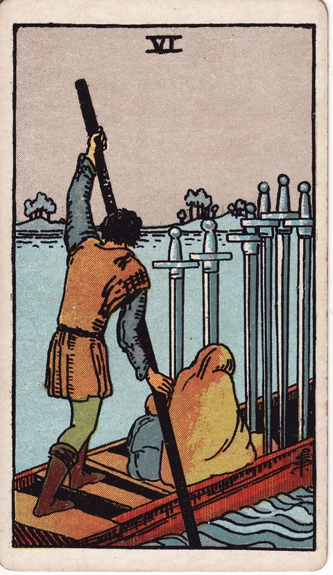

소드 · 타로 카드 백과사전
소드 6

정방향
키워드: 순조로운 전환 · 회복을 향한 항해 · 새로운 국면 · 매끄러워진 여정 · 산뜻해진 마무리 · 새로 향할 곳
조언: 지나온 자리에 미련을 두지 말고 앞을 향해 나아가세요.
연애운
솔로
힘들었던 연애의 아픔을 뒤로하고 새로운 만남을 향해 나아갈 준비가 되는 시기입니다. 지난 아픔에 발목 잡히지 않고 가벼운 마음으로 새 인연을 맞이해보세요.
커플
어려웠던 시기를 함께 지나며 관계가 더 안정된 국면으로 접어드는 시기입니다. 함께 버텨온 시간이 두 사람 사이를 한층 단단하게 만들어줄 것입니다.
재물운
소비
어려웠던 지출 상황에서 벗어나 안정적인 흐름으로 접어드는 시기입니다. 지금의 안정을 지키려면 힘들었던 시절의 절약 습관을 조금은 이어가는 것이 좋습니다.
투자
손실을 딛고 더 안전한 투자 방식으로 전환하는 시기입니다. 무리한 수익률보다 꾸준함을 목표로 삼는 편이 지금은 유리합니다.
취업운
구직
여러 번의 실패를 딛고 새로운 국면으로 넘어가는 시기입니다. 지난 탈락의 경험이 오히려 이번 지원서를 더 탄탄하게 만들어줄 수 있습니다.
이직
힘들었던 직장 생활을 정리하고 새로운 곳으로 순조롭게 옮겨가는 시기입니다. 새 자리에서는 조급해하지 말고 차근차근 적응해가면 됩니다.
직장운
팀워크
힘들었던 팀 상황을 지나 협업이 순조로운 국면으로 접어드는 시기입니다. 회복된 분위기를 이어가려면 그동안의 노력을 서로 인정해주는 시간이 필요합니다.
개인성과
어려웠던 업무 시기를 벗어나 새로운 흐름을 타는 시기입니다. 이 흐름을 잘 살려 그동안 미뤄뒀던 업무들도 하나씩 정리해보세요.
사업운
창업준비
숱한 시행착오 끝에 사업 모델이 비로소 자리를 잡아가는 시기입니다. 지금의 안정을 발판 삼아 다음 단계를 조심스럽게 그려봐도 좋습니다.
운영중
매출 부진의 터널을 지나 사업이 눈에 띄게 안정을 찾아가는 시기입니다. 회복세를 이어가려면 어려웠던 시기에 줄였던 비용 관리 습관을 유지해보세요.
학업운
시험준비
어려웠던 슬럼프를 지나 학습이 순조로운 궤도에 오르는 시기입니다. 지금의 흐름을 유지하려면 무리한 욕심보다 꾸준한 페이스가 중요합니다.
진로고민
고민 많던 진로 방향이 정리되며 새로운 국면으로 나아가는 시기입니다. 방향이 정해진 만큼 이제는 구체적인 실행 계획을 세워볼 때입니다.
건강운
신체
몇 주간 애먹었던 컨디션 난조가 풀리며 몸이 한결 가벼워지는 시기입니다. 회복된 컨디션을 유지하려면 무리하게 밀어붙이지 말고 서서히 활동량을 늘려가세요.
정신
오랫동안 짓눌렸던 마음의 무게가 가벼워지며 감정이 안정을 찾아가는 시기입니다. 안정을 되찾은 지금이 스스로를 다독여준 시간에 감사할 여유를 가져볼 때입니다.
대인관계운
새로운 인연
낯설었던 관계가 편안한 국면으로 자연스럽게 옮겨가는 시기입니다. 편안해진 만큼 조금 더 솔직한 이야기를 나눠봐도 좋은 시기입니다.
기존 관계
소원했던 관계가 회복되며 더 안정적인 사이로 접어드는 시기입니다. 회복된 관계를 당연하게 여기지 않고 꾸준히 마음을 표현해보세요.
명예운
어려웠던 평판이 서서히 회복되며 새로운 이미지로 나아가는 시기입니다. 회복된 이미지를 지키려면 예전의 실수를 되풀이하지 않는 태도가 중요합니다.
이사운
힘들었던 상황을 벗어나 새로운 곳에서 안정을 찾아가는 시기입니다. 새로운 환경에 적응하는 동안은 조급해하지 않아도 괜찮습니다.
자식운
밤낮없이 힘들었던 육아의 고비를 넘기고 아이와 함께 한숨 돌리게 되는 시기입니다. 이 여유로운 시간을 아이와 함께 편안하게 보내보세요.
역방향
키워드: 떨치지 못한 미련 · 무거운 발걸음 · 정리되지 않은 과거 · 질질 끄는 작별 · 발이 묶인 익숙함 · 묵은 흔적 씻어내기
조언: 뒤에 남은 것에 매이지 말고 나아가야 할 이유를 떠올려보세요.
연애운
솔로
지난 연애에 대한 미련을 떨치지 못해 새로운 만남에 소극적일 수 있는 시기입니다. 지난 인연의 그림자에 머물지 말고 지금 눈앞의 사람에게 마음을 열어보세요.
커플
관계를 정리해야 함을 알면서도 미련 때문에 발걸음을 떼지 못하고 있을 수 있습니다. 정리를 미룰수록 서로에게 남는 상처만 깊어질 수 있습니다.
재물운
소비
지난 소비 습관을 완전히 정리하지 못해 같은 문제가 반복될 수 있습니다. 예전 습관으로 돌아가려는 순간을 스스로 알아차리는 것이 첫걸음입니다.
투자
지난 투자 손실이 자꾸 떠올라 좋은 기회 앞에서도 선뜻 움직이지 못할 수 있는 시기입니다. 지난 손실과 지금의 기회는 다르다는 걸 스스로 구분해볼 필요가 있습니다.
취업운
구직
떨어진 이유를 곱씹느라 다음 지원서에 손이 잘 가지 않을 수 있는 시기입니다. 지난 결과에 머물러 있기보다 다음 지원에 에너지를 옮겨보세요.
이직
몸은 떠날 준비가 됐는데도 정든 사람들 생각에 사표 제출을 자꾸 미루고 있을 수 있습니다. 아쉬운 마음은 남기더라도 결정을 더 미루면 새로운 시작도 늦어집니다.
직장운
팀워크
한 차례 갈등을 겪은 팀 분위기가 겉으로는 잠잠해도 속으로는 여전히 서먹할 수 있는 시기입니다. 묵은 감정을 짚고 넘어가지 않으면 비슷한 갈등이 다시 반복될 수 있습니다.
개인성과
예전 실수를 곱씹느라 눈앞의 새로운 업무에 자신 있게 나서지 못하고 있을 수 있는 시기입니다. 실수를 통해 배운 것에 집중하고 지난 일은 그만 내려놓아도 됩니다.
사업운
창업준비
이전 실패에 대한 미련으로 새로운 시도를 망설이고 있을 수 있습니다. 지난 실패의 원인만 정리하고 나면 다시 도전할 용기를 낼 수 있습니다.
운영중
정리 시점을 놓친 사업 부분이 발목을 잡아 다음 단계로 나아가지 못하고 있을 수 있습니다. 미련이 남더라도 정리할 부분은 과감히 정리해야 다음 단계로 넘어갈 수 있습니다.
학업운
시험준비
예전에 익숙했던 학습 습관을 놓지 못해 더 나은 방법을 외면하고 있을 수 있는 시기입니다. 익숙함을 내려놓고 낯선 방법을 시도해볼 용기가 필요합니다.
진로고민
가지 않은 길에 대한 미련으로 새로운 선택에 확신을 갖지 못할 수 있습니다. 지나간 선택지에 대한 아쉬움은 접어두고 지금의 길에 집중해보세요.
건강운
신체
완치되지 않은 상태를 인정하지 못하고 무리하게 활동하고 있을 수 있습니다. 몸 상태를 있는 그대로 받아들여야 진짜 회복이 시작될 수 있습니다.
정신
지난 아픔을 완전히 떨치지 못해 마음이 계속 무거울 수 있는 시기입니다. 아픔을 억지로 지우려 하기보다 인정하고 흘려보내는 연습이 필요합니다.
대인관계운
새로운 인연
예전 사람과 비교하는 버릇 때문에 새로운 인연 앞에서 선뜻 마음을 열지 못할 수 있습니다. 지금 앞에 있는 사람의 모습을 있는 그대로 봐주는 노력이 필요합니다.
기존 관계
정리해야 할 관계를 놓지 못한 채 계속 끌려다니고 있을 수 있습니다. 붙잡고만 있지 말고 관계를 어떻게 할지 스스로에게 다시 물어보세요.
명예운
지난 오해를 완전히 떨치지 못해 평판이 계속 발목을 잡을 수 있습니다. 먼저 나서서 오해를 풀려는 노력이 있어야 평판도 자연스레 정리됩니다.
이사운
떠나온 곳에 대한 미련으로 새로운 환경에 적응이 더딜 수 있는 시기입니다. 떠나온 곳과 비교하지 않고 지금 있는 곳의 장점을 찾아보는 태도가 도움이 됩니다.
자식운
지난 갈등에 대한 미련으로 아이와의 관계가 완전히 풀리지 않고 있을 수 있습니다. 지난 갈등을 계속 마음에 담아두기보다 먼저 다가가 대화를 시도해보세요.
같은 슈트: 소드 에이스 · 소드 2 · 소드 3 · 소드 4 · 소드 5 · 소드 6 · 소드 7 · 소드 8 · 소드 9 · 소드 10 · 소드 시종 · 소드 기사 · 소드 퀸 · 소드 킹
홈에서 직접 카드 뽑아보기 ↗